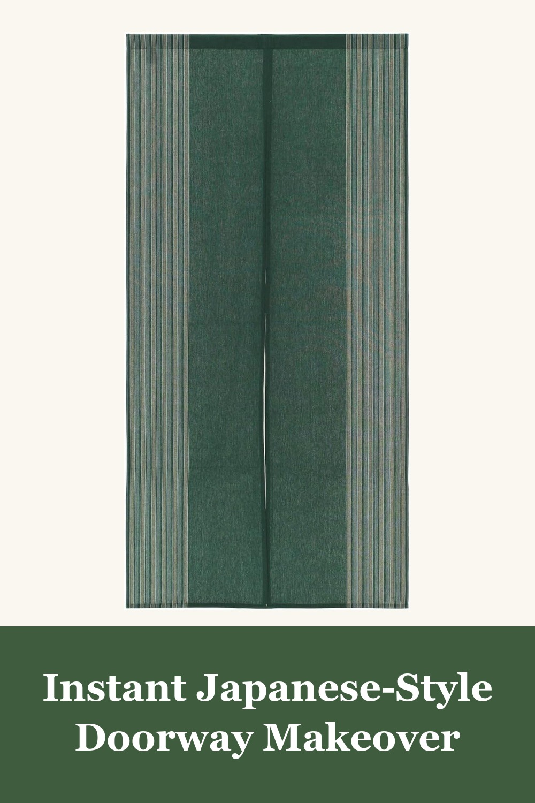
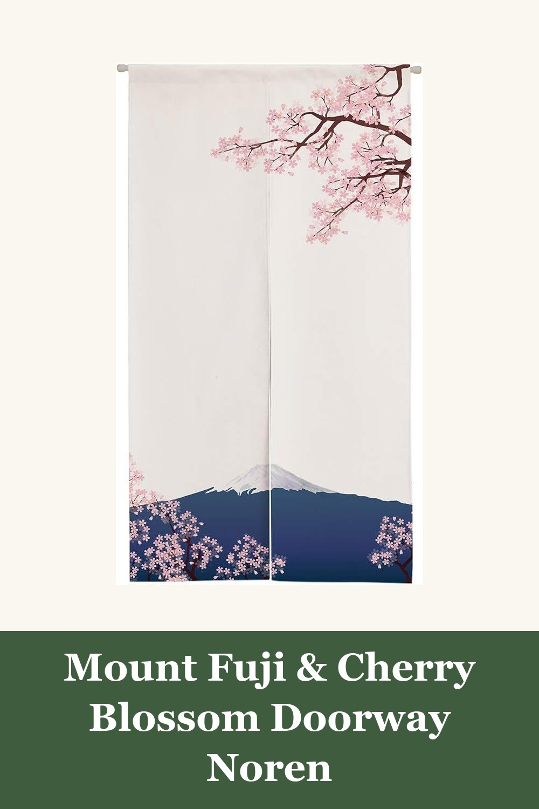
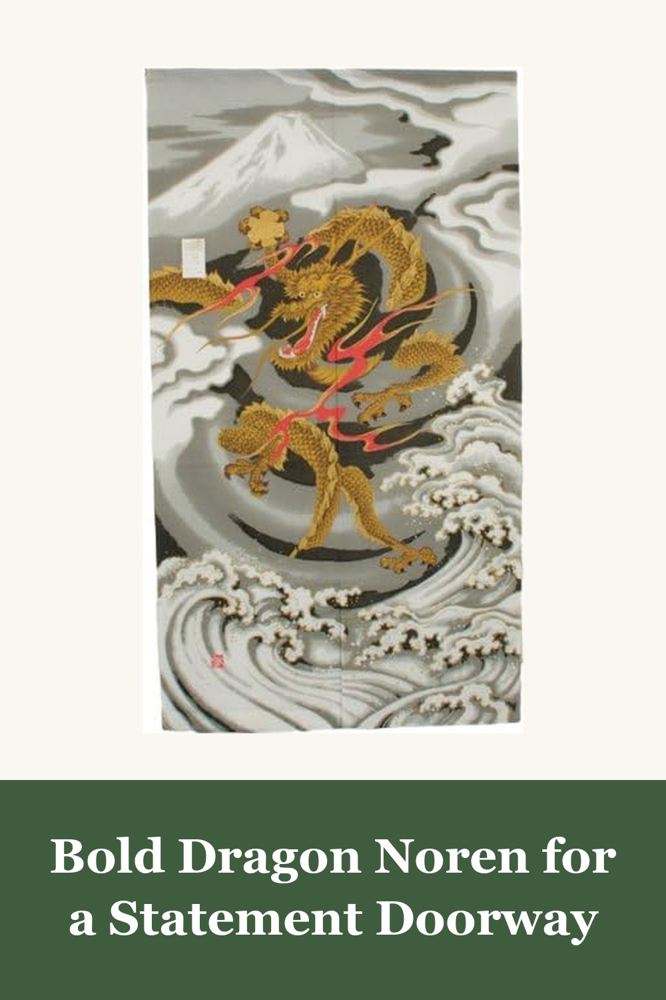

Japanese Noren Doorway Curtain, Cotton Blend Two-Panel Split (Matcha Green)
$26.80
A simple striped noren curtain in matcha green — nearly 5,000 Amazon reviews make this the most-loved doorway curtain on Amazon. Hand-washable cotton blend, installs in minutes with a tension rod.
View on Amazon →
Ofat Home Mount Fuji & Cherry Blossom Noren, 33.5" x 59"
$23.99
A dreamy sakura-and-Fuji scene on lightweight fabric — this noren brings a soft, springtime version of Japan into any hallway, apartment, or bedroom doorway.
View on Amazon →
Japanese Doorway & Window Curtain (Noren), Golden Dragon & Wave Design
$23.99
A dramatic golden dragon rising over ocean waves beneath Mount Fuji — a bold, traditional-art noren for anyone who wants their Japanese doorway curtain to be a conversation piece.
View on Amazon →